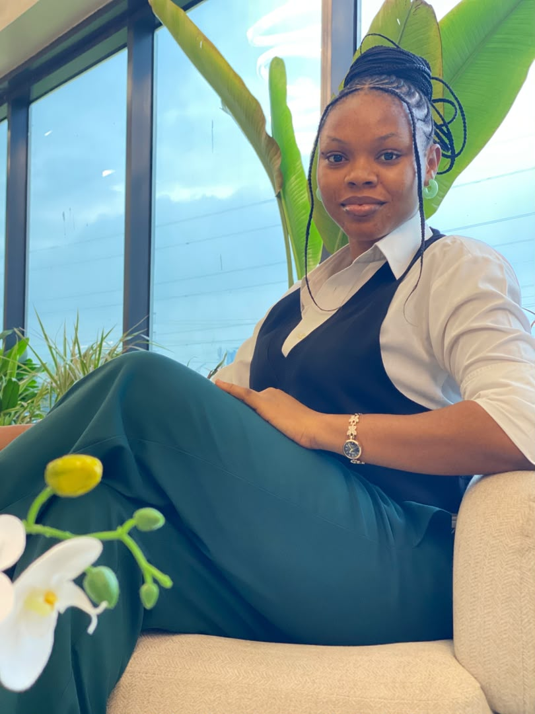
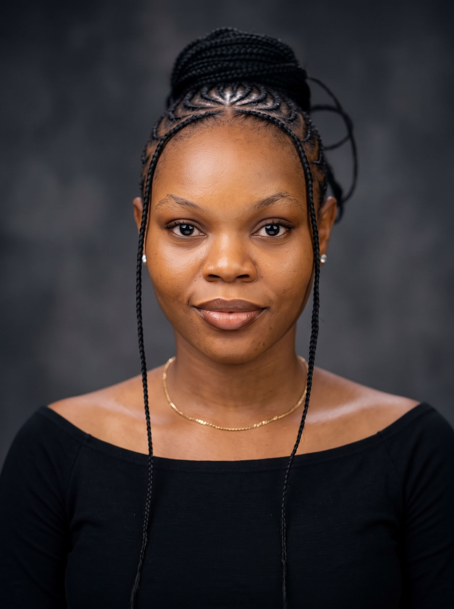
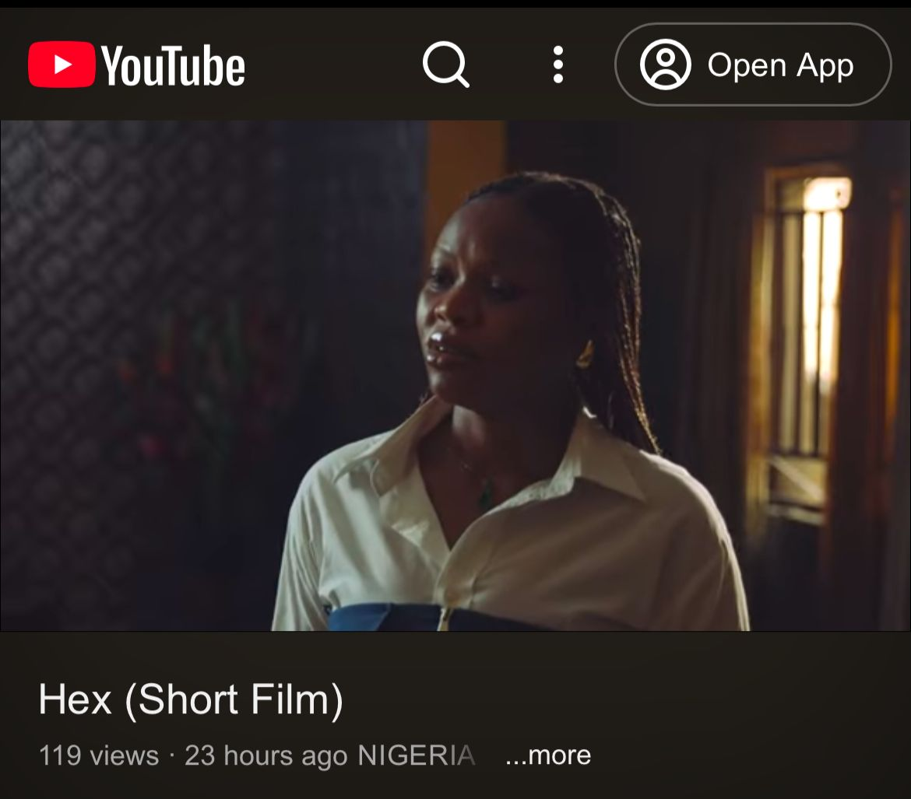
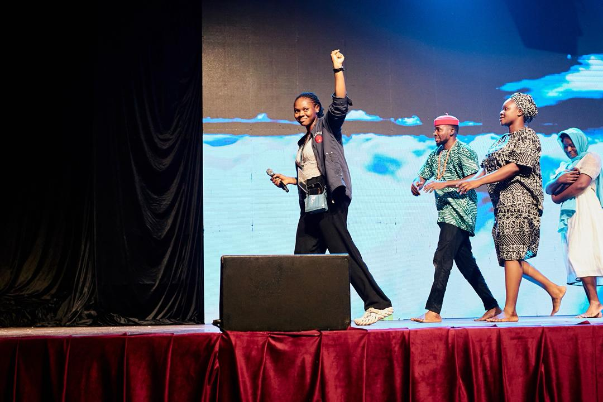

B.A. Theatre Arts
University of Lagos
Graduated with DistinctionCOMFORT OBIANUJU IBE
Actor • Stage Manager • Production Manager
Performance · Production · Audience Experience

I’m Comfort Uju, an actor, stage manager and production manager working across theatre, film and live entertainment. I started from acting, then discovered that I genuinely enjoy the work behind the scenes too, organising people, solving problems and helping a production come together.
My experience has grown across acting, stage and production management, front of house, welfare, content and artist support. I understand productions from different sides: the performer, the crew and the audience.

University of Lagos
Graduated with DistinctionKAP Film & Television Academy × National Film Institute
TAFTA
Languages English · Igbo · Yoruba (Basic) · Spanish (Basic)
I enjoy characters that make me reach for something outside myself, whether that is humour, grief, authority, trouble, vulnerability or a completely different way of seeing the world.
I played Zina, the young, glamorous Lagos third wife of Lt. Chief Sylvanus, a man married to two women old enough to be her mother. Zina is drawn to what she calls Chief’s “old money” and the lifestyle that comes with it. Her world changes abruptly when Chief dies on top of her while they are having sex, leaving her caught in the aftermath of his death and the complicated family she married into.
VIEW PRODUCTION ↗Tomisin and her brother prank their parents to make a point about the importance of listening to their children and being present for their teens. I performed the role in Yoruba and English, finding the balance between Tomisin’s playful energy and the maturity of an older daughter.
VIEW PRODUCTION ↗Aurora is a young woman living with parental neglect, drug use and the consequences of painful choices. Beneath the chaos, she has a good heart. I played her journey from a troubled young woman into the centre of the story’s transformation.
WATCH ↗Mrs Benson is a mother to a child living with sickle cell. Her marriage is shaken when her husband discovers the child is not biologically his, in a story built around sickle cell awareness, family and resentment.
VIEW PRODUCTION ↗I played a curious household maid who knew everybody’s secrets and loved a good gossip. Funny enough, she shares my real name, although that is probably where our similarities end because, naturally, I mind my business.
VIEW PRODUCTION ↗I played a journalist interviewing people connected to a murder case.
VIEW PRODUCTION ↗
Ugo is grieving her boyfriend, who died in a car crash, but she refuses to accept that he is gone. While her sister tries to help her move forward, Ugo keeps reliving memories of the relationship and holding on to a life that has already changed.
WATCH FILM ↗I played an ambitious salon apprentice who believes her qualifications have earned her the manager position, only for a new manager to be brought in instead. She is troublesome, outspoken and definitely does not take the disappointment quietly.
WATCH ↗I played the Lagos chapter organisational head advocating against violations of the rights of women and children. The short film was submitted for the 75th Universal Human Rights Conference.
WATCH ↗This side of my work brings together organisation, people and creative execution.

Beriola Ayanshina Entertainments
My acting background helps me understand performers. My stage-management work keeps me focused on timing, people, cues and the details that make live performance run smoothly.

Stage Manager · Shell Hall, MUSON Centre. Stage managed a festival production in a professional venue, supporting the team and keeping the live production organised and moving.
Assistant Stage Manager · Theatre on the Lawn. Supported backstage coordination while also performing in the production and working Front of House.
Stage Manager. Managed cast movement, stage logistics and the flow of the live performance.
Stage Manager. Coordinated rehearsals and live performance, managed backstage operations and performance cues, and liaised with the director and technical teams.
Stage Manager. Supported rehearsal planning and stage coordination while maintaining clear communication across the team.
I’ve also worked in roles centred on the audience, content and the welfare of people on set. These parts of production that can easily be overlooked, but still shape the experience.
Stage Play
VIEW ↗Stage Play
VIEW ↗Stage Play · 2025
VIEW ↗2023—2024 · Supported the practical needs and welfare of people working on set.
LET’S MAKE SOMETHING GOOD.
I am available for acting, stage management, production management and audience-experience projects in Nigeria. I am also available for travel projects.